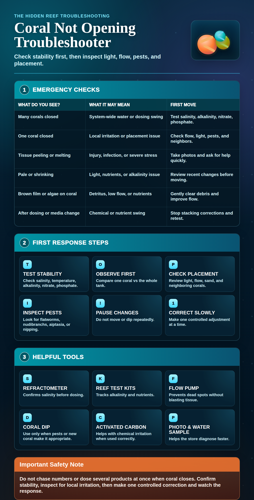

1
Core tests
Confirm salinity, temperature, alkalinity, nitrate, and phosphate.
Corals react strongly to swings. Test before changing placement, lighting, or dosing.
 The Hidden ReefAquariums · Fish · Coral · Ponds
The Hidden ReefAquariums · Fish · Coral · Ponds
Closed polyps, shrinking tissue, pale color, or sudden irritation usually means something changed. Check stability first, then look at light, flow, pests, neighbors, and recent dosing or dips.
Repeatedly moving or dipping a stressed coral can make the problem worse.
Corals react strongly to swings. Test before changing placement, lighting, or dosing.
Check for pests, sand on tissue, fish nipping, neighboring coral sweepers, and direct blast from a pump.
Adjust slowly unless livestock are in immediate danger. Stability is often the treatment.
The number of affected corals tells you whether to look locally or system-wide.
Think placement, flow, light, pests, fish nipping, or coral aggression before changing the whole tank.
Check salinity, alkalinity, temperature, pH trend, nutrients, and recent dosing or water changes.
Some soft corals shed naturally, but poor flow, low nutrients, or chemical irritation can extend the closure.
Watch alkalinity swings, low magnesium, too much flow, stinging neighbors, and damage to inflated tissue.
Review light intensity, nutrients, alkalinity stability, pests, and rapid parameter changes.
Bring photos and water results quickly. Fast tissue loss needs a more careful plan than generic coral food.
Use this before changing lights, moving the coral, or adding supplements.
Coral stress is usually about instability, irritation, or a mismatch between species and placement.
Fast changes can close coral even when the final number looks acceptable.
Direct blasting can damage tissue, while dead spots allow detritus and film to build up.
New lights, cleaned lenses, moved rockwork, or schedule changes can shock coral.
Very low or very high nutrients can both irritate coral, especially after rapid media changes.
Flatworms, nudibranchs, vermetid snails, aiptasia, and fish nipping can keep one coral closed.
Fresh carbon, GFO, medication, dips, and supplements can cause stress when changed aggressively.
Bring test results and photos before buying a fix for a coral problem.
Alkalinity, calcium, magnesium, nitrate, phosphate, salinity, and temperature are the starting point.
Shop test kitsStable salinity and reliable measurement matter before supplements or coral foods.
Shop saltwaterBetter random flow can help coral stay clean without blasting tissue.
View equipmentLighting changes should be gradual, especially for newly moved coral.
View lightingUseful when chemicals, coral warfare, or dissolved organics are suspected, but avoid drastic swings.
View reactorsPhotos, inspection containers, coral dip, and careful observation help identify pests safely.
Shop maintenanceDo not move the coral repeatedly, dose several supplements at once, or dip every coral before checking water stability. If tissue is peeling, pests are visible, or multiple corals close at once, bring photos and test results for help.
Compare with the algae guide